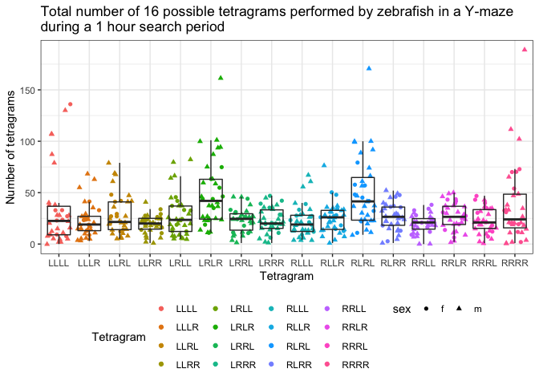
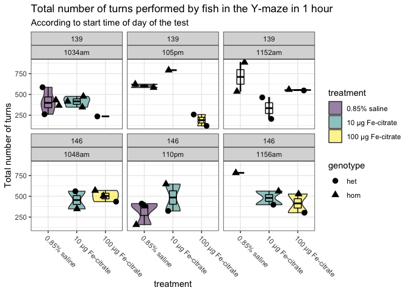
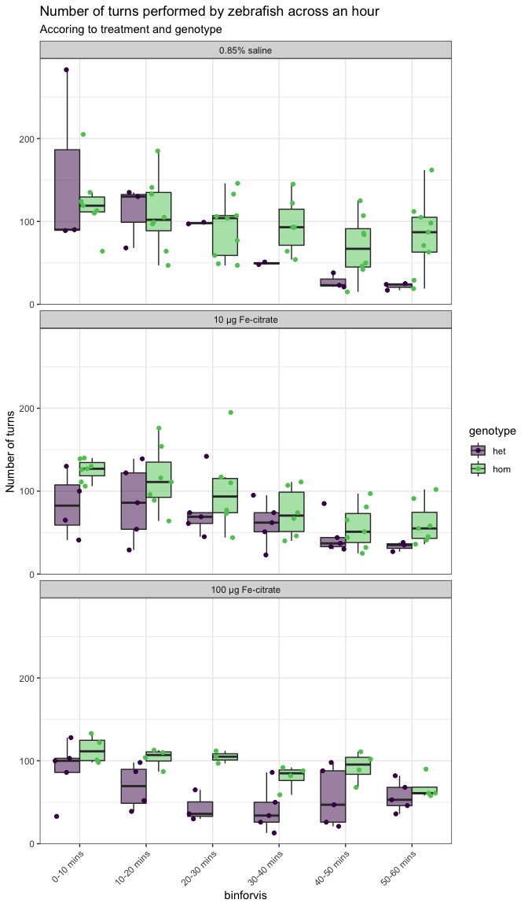
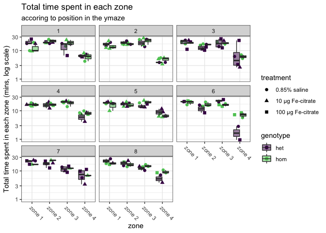
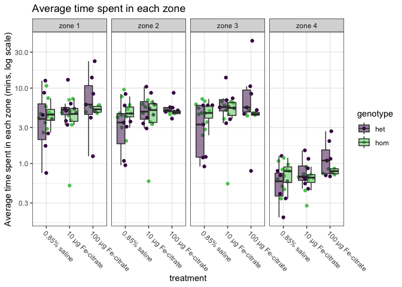

FeCit_Ymaze_pilot
Karissa Barthelson
2022-10-31
Last updated: 2022-11-01
Checks: 6 1
Knit directory: 2022_MPSII_qPCR_ironSupplementation/
This reproducible R Markdown analysis was created with workflowr (version 1.6.2). The Checks tab describes the reproducibility checks that were applied when the results were created. The Past versions tab lists the development history.
The R Markdown file has unstaged changes. To know which version of the R Markdown file created these results, you’ll want to first commit it to the Git repo. If you’re still working on the analysis, you can ignore this warning. When you’re finished, you can run wflow_publish to commit the R Markdown file and build the HTML.
Great job! The global environment was empty. Objects defined in the global environment can affect the analysis in your R Markdown file in unknown ways. For reproduciblity it’s best to always run the code in an empty environment.
The command set.seed(20221025) was run prior to running the code in the R Markdown file. Setting a seed ensures that any results that rely on randomness, e.g. subsampling or permutations, are reproducible.
Great job! Recording the operating system, R version, and package versions is critical for reproducibility.
Nice! There were no cached chunks for this analysis, so you can be confident that you successfully produced the results during this run.
Great job! Using relative paths to the files within your workflowr project makes it easier to run your code on other machines.
Great! You are using Git for version control. Tracking code development and connecting the code version to the results is critical for reproducibility.
The results in this page were generated with repository version 4656d3a. See the Past versions tab to see a history of the changes made to the R Markdown and HTML files.
Note that you need to be careful to ensure that all relevant files for the analysis have been committed to Git prior to generating the results (you can use wflow_publish or wflow_git_commit). workflowr only checks the R Markdown file, but you know if there are other scripts or data files that it depends on. Below is the status of the Git repository when the results were generated:
Ignored files:
Ignored: .Rhistory
Ignored: .Rproj.user/
Ignored: data/.DS_Store
Ignored: data/ymaze/.DS_Store
Ignored: data/ymaze/processed_data/.DS_Store
Ignored: data/ymaze/raw_data/.DS_Store
Unstaged changes:
Modified: analysis/FeCit_Ymaze_pilot.Rmd
Note that any generated files, e.g. HTML, png, CSS, etc., are not included in this status report because it is ok for generated content to have uncommitted changes.
These are the previous versions of the repository in which changes were made to the R Markdown (analysis/FeCit_Ymaze_pilot.Rmd) and HTML (docs/FeCit_Ymaze_pilot.html) files. If you’ve configured a remote Git repository (see ?wflow_git_remote), click on the hyperlinks in the table below to view the files as they were in that past version.
| File | Version | Author | Date | Message |
|---|---|---|---|---|
| Rmd | 4656d3a | Karissa Barthelson | 2022-11-01 | addedbehav |
| html | 4656d3a | Karissa Barthelson | 2022-11-01 | addedbehav |
library(tidyverse)
library(readxl)
library(here)
library(magrittr)
library(scales)
library(readxl)
library(ggpubr)
library(ggeasy)
library(ggfortify)
library(ggbeeswarm)
library(ggforce)
library(ggrepel)
library(kableExtra)
# stat analysis
library(broom)
library(lme4)
library(performance)
library(car)
library(emmeans)
library(glmmTMB)
library(MASS)
# set the default theme for ggplot as theme_bw
theme_set(theme_bw())# read in the processed data and metadata
meta <- read_xlsx("data/2022Oct19 ip injection FeCitrate naglu hom x het 6m meta.xlsx") %>%
mutate(fish_id = as.character(fish_id),
treatment = factor(treatment,
levels = c("0.85% saline",
"10 µg Fe-citrate",
"100 µg Fe-citrate"))
)
final_data <- read_csv("data/ymaze/processed_data/fecit/final_output.csv") %>%
dplyr::select(-1) %>%
mutate(fish_id = factor(fish_id)) %>%
left_join(meta) %>%
dplyr::filter(genotype%in% c("het", "hom"))
#view(final_data)
# make an object which converts the final data to long format. for easier plotting in ggplot
final_data_long <- final_data %>%
gather(key = "tetras", value = "Count", # convert to long format
grep("[L|R]{4}",
colnames(.))
)
# also make an object which sums the tetragrams over the hour
final_data_summedoverbins <- final_data %>%
gather(key = "tetras", value = "Count", # convert to long format
grep("[L|R]{4}", # select the columns which contain a L or a R four times
colnames(.))
) %>%
group_by(fish_id, tetras) %>%
mutate(x = sum(Count)) %>% # sum the tetragram counts per fish_id
dplyr::select(colnames(meta), tetras, x) %>%
uniqueIntroduction
In this analysis, I will analyse behavioural data generated for zebrafish arising from a lay from naglu A603fs hom x het after treatment of different amounts of ferric citrate in the Zantiks LT Y-maze.
Note that these fish were tested while construction was occuring on the floor below us. There was often loud noises occuring.
Fish were isolated for 45 mins, then placed in the mazes alone for 1 hour. Raw data was collected, and metadata was recorded (i.e. sex, time, etc). These raw data spreadsheets were batch processed in the BatchProcess R script in the code folder to produce the final_data object. This object contains the tetragram frequencies (see below). Note that fish were genotyped after data collection so that we are blinded from any observer bias until after raw data collection. Additionally, the videos were manually observed to ensure proper tracking. Any fish where the tracking was not perfect was omitted.
read_csv("data/ymaze/raw_data/fecit/ymaze_inLT-20221027T103409.csv", skip =4, col_names = F) %>%
head %>%
dplyr::select(-X2, -X3) %>%
set_colnames(c("Time", "fish",'enter or exit', "zone")) %>%
kable(caption = "example of raw data") %>%
kable_styling(full_width = F)| Time | fish | enter or exit | zone |
|---|---|---|---|
| 30.817 | 1 | Enter_Zone | 2 |
| 30.817 | 2 | Enter_Zone | 3 |
| 30.817 | 3 | Enter_Zone | 1 |
| 30.817 | 4 | Enter_Zone | 2 |
| 30.817 | 5 | Enter_Zone | 2 |
| 30.817 | 6 | Enter_Zone | 3 |
final_data %>%
head %>%
kable(caption = "Example of the processed data") %>%
kable_styling() | fish_id | bin | LLLL | LLLR | LLRL | LLRR | LRLL | LRLR | LRRL | LRRR | RLLL | RLLR | RLRL | RLRR | RRLL | RRLR | RRRL | RRRR | L | R | total_turns | reps | alts | rel_reps | rel_alts | rel_R | rel_L | tank | treatment | sex | Note | Note2 | dpi | genotype | ymazeUni | start time | YmazePosition | VideosEndIn | …13 | …14 | …15 | …16 |
|---|---|---|---|---|---|---|---|---|---|---|---|---|---|---|---|---|---|---|---|---|---|---|---|---|---|---|---|---|---|---|---|---|---|---|---|---|---|---|---|---|---|
| 1 | 1 | 3 | 4 | 10 | 5 | 10 | 69 | 10 | 14 | 4 | 11 | 69 | 19 | 6 | 18 | 14 | 14 | 127 | 156 | 283 | 17 | 138 | 6.007067 | 48.763251 | 55.12367 | 44.87633 | 1 | 0.85% saline | m | NA | NA | 7 | het | 139 | 1034am | 1 | 103440 | NA | NA | NA | NA |
| 1 | 2 | 7 | 4 | 8 | 5 | 9 | 15 | 9 | 7 | 4 | 9 | 16 | 11 | 5 | 12 | 7 | 4 | 66 | 69 | 135 | 11 | 31 | 8.148148 | 22.962963 | 51.11111 | 48.88889 | 1 | 0.85% saline | m | NA | NA | 7 | het | 139 | 1034am | 1 | 103440 | NA | NA | NA | NA |
| 1 | 3 | 3 | 4 | 5 | 5 | 6 | 7 | 7 | 6 | 4 | 6 | 8 | 9 | 4 | 9 | 6 | 5 | 44 | 53 | 97 | 8 | 15 | 8.247423 | 15.463918 | 54.63918 | 45.36082 | 1 | 0.85% saline | m | NA | NA | 7 | het | 139 | 1034am | 1 | 103440 | NA | NA | NA | NA |
| 1 | 4 | 2 | 1 | 1 | 3 | 3 | 2 | 2 | 5 | 1 | 3 | 5 | 4 | 1 | 7 | 5 | 3 | 21 | 30 | 51 | 5 | 7 | 9.803922 | 13.725490 | 58.82353 | 41.17647 | 1 | 0.85% saline | m | NA | NA | 7 | het | 139 | 1034am | 1 | 103440 | NA | NA | NA | NA |
| 1 | 5 | 0 | 1 | 0 | 3 | 0 | 0 | 2 | 2 | 0 | 2 | 1 | 1 | 2 | 2 | 2 | 0 | 10 | 11 | 21 | 0 | 1 | 0.000000 | 4.761905 | 52.38095 | 47.61905 | 1 | 0.85% saline | m | NA | NA | 7 | het | 139 | 1034am | 1 | 103440 | NA | NA | NA | NA |
| 1 | 6 | 0 | 0 | 1 | 1 | 1 | 1 | 0 | 2 | 0 | 1 | 1 | 1 | 0 | 2 | 2 | 1 | 7 | 10 | 17 | 1 | 2 | 5.882353 | 11.764706 | 58.82353 | 41.17647 | 1 | 0.85% saline | m | NA | NA | 7 | het | 139 | 1034am | 1 | 103440 | NA | NA | NA | NA |
# define fish which had the tracking issues
fish2omit <- final_data_summedoverbins %>%
dplyr::filter(x > 200) %>%
.$fish_id %>%
unique
# remove them
final_data %<>%
dplyr::filter(!(fish_id %in%fish2omit))
final_data_long%<>%
dplyr::filter(!(fish_id %in% fish2omit))
final_data_summedoverbins%<>%
dplyr::filter(!(fish_id %in% fish2omit))check proportions of fish
After omitting the fish with tracking issues, only 3 het fish treated with 0.85% saline remain. This is not great for the stats, but this is only a pilot overall.
final_data %>%
dplyr::select(colnames(meta)) %>%
dplyr::distinct() %>%
group_by(genotype, sex, treatment, dpi) %>%
mutate(n = n()) %>%
ggplot(aes(x = genotype)) +
geom_bar(aes(fill = treatment),
position = "dodge",
colour = "black") +
facet_wrap(~dpi, nrow = 1) +
scale_fill_viridis_d() +
scale_y_continuous(breaks = seq(1:9)) +
theme(legend.position = "bottom"
)+
labs(title = "Number of fish per genotype, sex, treatment and dpi in the qPCR analysis",
y = "Number of fish",
x = "")
| Version | Author | Date |
|---|---|---|
| 4656d3a | Karissa Barthelson | 2022-11-01 |
Visualisation of raw data
Cleal et al. showed that zebrafish naturally perform more of the alternation tetragrams (LRLR and RLRL) in a Y-maze. We also see thgis somewhat here.
final_data_summedoverbins %>%
dplyr::distinct(x, .keep_all = T) %>%
ggplot(aes(x = tetras, y = x)) +
geom_jitter(aes(colour = tetras,
shape = sex)) +
geom_boxplot(outlier.shape = NA,
# aes(fill = Genotype)
fill = NA
) +
scale_fill_viridis_d() +
labs(y = "Number of tetragrams",
colour = "Tetragram",
x = "Tetragram")+
theme(legend.position = "bottom") +
ggtitle("Total number of 16 possible tetragrams performed by zebrafish in a Y-maze\nduring a 1 hour search period") 
| Version | Author | Date |
|---|---|---|
| 4656d3a | Karissa Barthelson | 2022-11-01 |
We can also overlay the genotype boxplots as shown below. Looks like the heterozyous and homozygous fish perform more alternations than the WT fish. I will look into this more later in the analysis
final_data_summedoverbins %>%
dplyr::distinct(x, .keep_all = T) %>%
ggplot(aes(x = tetras, y = x)) +
geom_jitter(aes(colour = tetras,
shape = sex)) +
geom_boxplot(outlier.shape = NA,
aes(fill = genotype),
alpha = 0.5,
) +
scale_fill_viridis_d() +
labs(y = "Number of tetragrams",
colour = "Tetragram",
x = "Tetragram")+
theme(legend.position = "bottom") +
facet_wrap(~treatment, ncol = 1) +
easy_rotate_x_labels(angle = -45) +
annotate("rect", # add some boxes aeround the alts
xmin = 5.5, xmax = 6.5,
ymin = -1, ymax = 200,
alpha = 0, color= "red") +
annotate("rect",
xmin = 10.5, xmax = 11.5,
ymin = -1, ymax = 200,
alpha = 0, color= "red") +
ggtitle("Total number of 16 possible tetragrams performed by zebrafish in a Y-maze\nduring a 1 hour search period")
| Version | Author | Date |
|---|---|---|
| 4656d3a | Karissa Barthelson | 2022-11-01 |
The alternation tetragrams are the tetragram of interest (the measure of working memory). Below indicates the number of tetragrams performed by zerbafish across the 6 x 10 min blocks of the hour they spent in the maze.
final_data_long %>%
dplyr::distinct(rel_alts, .keep_all = T) %>%
mutate(binforvis = case_when(
bin == 1 ~ "0-10 mins",
bin == 2 ~ "10-20 mins",
bin == 3 ~ "20-30 mins",
bin == 4 ~ "30-40 mins",
bin == 5 ~ "40-50 mins",
bin == 6 ~ "50-60 mins"
)) %>%
ggplot(aes(x = treatment, y = alts)) +
geom_boxplot(outlier.shape = NA,
aes(fill = genotype),
alpha = 0.5) +
geom_point(aes(colour = genotype),
position = position_jitterdodge()) +
facet_wrap(~binforvis, nrow = 1) +
theme(axis.text.x = element_text(angle = 45, hjust = 1, vjust = 1),
legend.position = "bottom") +
ylab("Frequency of alternation tetragrams (LRLR + RLRL)") +
scale_colour_viridis_d(end = 0.75) +
scale_fill_viridis_d(end = 0.75)
| Version | Author | Date |
|---|---|---|
| 4656d3a | Karissa Barthelson | 2022-11-01 |
# geom_label_repel(aes(label = fish_id),
# data = . %>%
# dplyr::filter(fish_id == 1))We can also display this as the relative amount of alternation tetragrams performed by zebrafish in a 1 hour search period. This will control for how active each fish is. Again, fish 18 and 24 looks like outliers.
final_data_long %>%
dplyr::distinct(rel_alts, .keep_all = T) %>%
mutate(binforvis = case_when(
bin == 1 ~ "0-10 mins",
bin == 2 ~ "10-20 mins",
bin == 3 ~ "20-30 mins",
bin == 4 ~ "30-40 mins",
bin == 5 ~ "40-50 mins",
bin == 6 ~ "50-60 mins"
)) %>%
ggplot(aes(x = treatment, y = rel_alts)) +
geom_boxplot(outlier.shape = NA,
aes(fill = genotype),
alpha = 0.5) +
geom_point(aes(colour = genotype),
position = position_jitterdodge()) +
facet_wrap(~binforvis, nrow = 1) +
theme(axis.text.x = element_text(angle = 45, hjust = 1, vjust = 1),
legend.position = "bottom") +
ylab("Relative number of alternation tetragrams\n(LRLR + RLRL) / total_turns") +
scale_colour_viridis_d(end = 0.75) +
scale_fill_viridis_d(end = 0.75) 
| Version | Author | Date |
|---|---|---|
| 4656d3a | Karissa Barthelson | 2022-11-01 |
Locomotor defect
Alteration to locomotor activity could be a confounding effect with genotype to alternation (LRLR + RLRL) frequency. If mutant and/or treated fish had some form of locomotor change, they could be performing more or less alternation tetragrams not due to impairment of spatial working memory. To account for this, I will test whether the genotype and/or treatment of the fish had a significant effect on:
- the total number of turns the fish performed in the hour spent in the maze or
- the average time spent in each zone of the maze.
total number of turns
I first visualised the total number of turns . Some differences are obsevred between the hets and the homs. Particularly in the 100 µg Fe-citrate treatment group.
final_data_summedoverbins %>%
ungroup() %>%
group_by(fish_id) %>%
mutate(total_turns = sum(x)) %>%
dplyr::select(colnames(meta), total_turns) %>%
unique %>%
ggplot(aes(x = genotype,y = total_turns)) +
geom_violin(aes(fill = genotype),
alpha = 0.5) +
geom_boxplot(aes(colour = genotype),
fill = NA,
width = 0.25,
colour= "black") +
geom_quasirandom(aes(shape = sex),
size = 2) +
scale_fill_viridis_d(option = "viridis") +
scale_colour_viridis_d(option = "viridis") +
facet_wrap(~treatment) +
labs(y = "Total number of turns",
title = "Total number of turns performed by fish in the Y-maze in 1 hour",
subtitle = "According to treatment")
| Version | Author | Date |
|---|---|---|
| 4656d3a | Karissa Barthelson | 2022-11-01 |
The plot below is grouped by genotype rather than treartment. Not much difference between treatment groups within genotypes.
final_data_summedoverbins %>%
ungroup() %>%
group_by(fish_id) %>%
mutate(total_turns = sum(x)) %>%
dplyr::select(colnames(meta), total_turns) %>%
unique %>%
ggplot(aes(x = treatment,y = total_turns)) +
geom_violin(aes(fill = genotype),
alpha = 0.5) +
geom_boxplot(aes(colour = genotype),
fill = NA,
width = 0.25,
colour= "black") +
geom_quasirandom(aes(shape = sex),
size = 2) +
scale_fill_viridis_d(option = "viridis") +
scale_colour_viridis_d(option = "viridis") +
facet_wrap(~genotype) +
labs(y = "Total number of turns",
title = "Total number of turns performed by fish in the Y-maze in 1 hour",
subtitle = "According to treatment")
| Version | Author | Date |
|---|---|---|
| 4656d3a | Karissa Barthelson | 2022-11-01 |
I also want to look at whether there is a batch effect of test. There were a total of 6 tests (start times indicated in the plot) performed in one of two zantiks units (139 and 146). Each test contained 8 fish which were randomly assigned. A bit of fvariation is observed between start times, but this would be expected considering they are performed throughoutthe day, and have had sligtly different environmental conditions (e.g. ,vibrations from the construction, people talking out in the hall etc), as well as circadian differences.
final_data_summedoverbins %>%
ungroup() %>%
group_by(fish_id) %>%
mutate(total_turns = sum(x)) %>%
dplyr::select(colnames(meta), total_turns) %>%
unique %>%
mutate(`start time` = factor(`start time`, levels = c(
"1034am",
"1048am",
"1152am",
"1156am",
"105pm",
"110pm"
))
) %>%
ggplot(aes(x = `start time`, y = total_turns)) +
geom_boxplot(aes(fill = `start time`),
outlier.shape = NA,
width = 0.25,
alpha = 0.5,
colour= "black") +
geom_jitter(aes(colour = `start time`),
size = 3) +
labs(y = "Total number of turns",
title = "Total number of turns performed by fish in the Y-maze in 1 hour",
subtitle = "According to start time of day of the test")
| Version | Author | Date |
|---|---|---|
| 4656d3a | Karissa Barthelson | 2022-11-01 |
I also had a look at whether the genotype and treatment groups could explain some of the apparent variation within tests. This does seem to be the case as observed in the fig below. the genotypes can sometimes show differences.
final_data_summedoverbins %>%
ungroup() %>%
group_by(fish_id) %>%
mutate(total_turns = sum(x),
`start time` = factor(`start time`, levels = c(
"1034am",
"1048am",
"1152am",
"1156am",
"105pm",
"110pm"
))) %>%
dplyr::select(colnames(meta), total_turns) %>%
unique %>%
ggplot(aes(x = genotype, y = total_turns)) +
geom_violin(aes(fill = genotype),
alpha = 0.5) +
geom_boxplot(aes(colour = genotype),
fill = NA,
width = 0.25,
colour= "black") +
geom_jitter(aes(shape = treatment),
size = 3) +
scale_fill_viridis_d(option = "viridis") +
scale_colour_viridis_d(option = "viridis") +
facet_wrap(~ymazeUni+`start time`) +
labs(y = "Total number of turns",
title = "Total number of turns performed by fish in the Y-maze in 1 hour",
subtitle = "According to start time of day of the test")
| Version | Author | Date |
|---|---|---|
| 4656d3a | Karissa Barthelson | 2022-11-01 |
Trying to determine whether the effect of treatment group and start time is more difficult to say, as there is often < 2 fish per treatment group within a particular test. This is just due to the nature of performing this pilot experiment and will not be such as issue next time (when we only have 2 treatment groups, saline and iron)
final_data_summedoverbins %>%
ungroup() %>%
group_by(fish_id) %>%
mutate(total_turns = sum(x)) %>%
dplyr::select(colnames(meta), total_turns) %>%
unique %>%
ggplot(aes(x = treatment, y = total_turns)) +
geom_violin(aes(fill = treatment),
alpha = 0.5) +
geom_boxplot(aes(colour = treatment),
fill = NA,
width = 0.25,
colour= "black") +
geom_jitter(aes(shape = genotype),
size = 3) +
scale_fill_viridis_d(option = "viridis") +
scale_colour_viridis_d(option = "viridis") +
facet_wrap(~ymazeUni+`start time`) +
easy_rotate_x_labels(angle = -45) +
labs(y = "Total number of turns",
title = "Total number of turns performed by fish in the Y-maze in 1 hour",
subtitle = "According to start time of day of the test")
| Version | Author | Date |
|---|---|---|
| 4656d3a | Karissa Barthelson | 2022-11-01 |
statistical test
To test whether the genotype and/or treatment have a significant effect overall on the total number of turns, I fitted the summed over bins data to a negative binomial generalised linear mixed effect model (negative binomial). No statistical evidence is observed here. The closest is the treatment 100 µg Fe-citrate group, which makes sense considering the plots above show the most difference. Since the start time of the test doesnt have a logical pattern (i.e. more active in morning), I’ve included it in the model as a random effect.
final_data_summedoverbins %>%
ungroup() %>%
group_by(fish_id) %>%
mutate(total_turns = sum(x)) %>%
dplyr::select(colnames(meta), total_turns) %>%
unique %>%
glmer.nb(total_turns ~ genotype*treatment + (1|`start time`),
data = .) %>%
summary %>%
.$coef %>%
as.data.frame() %>%
dplyr::rename(pval = "Pr(>|z|)") %>%
kable(caption = "Negative binomial GLM model coefficients.\n
None of the factors have a significant effect on the total number of turns" ) %>%
kable_styling() %>%
row_spec(row = c(5,6), background = "#ccffef")| Estimate | Std. Error | z value | pval | |
|---|---|---|---|---|
| (Intercept) | 6.0394614 | 0.2088604 | 28.9162572 | 0.0000000 |
| genotypehom | 0.2279509 | 0.2410592 | 0.9456221 | 0.3443413 |
| treatment10 µg Fe-citrate | -0.0728026 | 0.2642591 | -0.2754971 | 0.7829344 |
| treatment100 µg Fe-citrate | -0.2826648 | 0.2560516 | -1.1039367 | 0.2696206 |
| genotypehom:treatment10 µg Fe-citrate | 0.0445503 | 0.3208640 | 0.1388450 | 0.8895727 |
| genotypehom:treatment100 µg Fe-citrate | 0.3063598 | 0.3356062 | 0.9128550 | 0.3613188 |
turns across the hour.
I also want to look at whether the fish display changes to activity across the hour (i.e. are they more active when they are first placed in the maze?).
final_data_long %>%
dplyr::distinct(rel_alts, .keep_all = T) %>%
mutate(binforvis = case_when(
bin == 1 ~ "0-10 mins",
bin == 2 ~ "10-20 mins",
bin == 3 ~ "20-30 mins",
bin == 4 ~ "30-40 mins",
bin == 5 ~ "40-50 mins",
bin == 6 ~ "50-60 mins"
)) %>%
ggplot(aes(x = treatment, y = total_turns)) +
geom_boxplot(aes(fill = genotype),
position = "dodge",
alpha = 0.5,
outlier.shape = NA) +
geom_point(aes(colour = genotype),
position = position_jitterdodge()) +
facet_wrap(~binforvis, nrow = 1)+
theme(axis.text.x = element_text(angle = 45,
hjust = 1, vjust = 1),
legend.position = "bottom") +
labs(title = "Number of turns performed by zebrafish across an hour ",
subtitle = "Accoring to treatment and genotype",
y = "Number of turns") +
scale_colour_viridis_d(end = 0.75) +
scale_fill_viridis_d(end = 0.75)
| Version | Author | Date |
|---|---|---|
| 4656d3a | Karissa Barthelson | 2022-11-01 |
Looking at the changes to the total number of turns across the bins within genoytpes. The overall distibution looks simialr in each mutants, with the activity decreasing as time goes on.
final_data_long %>%
dplyr::distinct(rel_alts, .keep_all = T) %>%
mutate(binforvis = case_when(
bin == 1 ~ "0-10 mins",
bin == 2 ~ "10-20 mins",
bin == 3 ~ "20-30 mins",
bin == 4 ~ "30-40 mins",
bin == 5 ~ "40-50 mins",
bin == 6 ~ "50-60 mins"
)) %>%
ggplot(aes(x = binforvis, y = total_turns)) +
geom_boxplot(aes(fill = treatment),
position = "dodge",
alpha = 0.5,
outlier.shape = NA) +
geom_point(aes(colour = treatment),
position = position_jitterdodge()) +
facet_wrap(~genotype, nrow = 1, scales = "free_x")+
theme(axis.text.x = element_text(angle = 45,
hjust = 1, vjust = 1)) +
labs(title = "Number of turns performed by zebrafish across an hour ",
subtitle = "Accoring to treatment and genotype",
y = "Number of turns") +
scale_colour_viridis_d(end = 0.75) +
scale_fill_viridis_d(end = 0.75)
| Version | Author | Date |
|---|---|---|
| 4656d3a | Karissa Barthelson | 2022-11-01 |
Finally, want to vis within treatments
final_data_long %>%
dplyr::distinct(rel_alts, .keep_all = T) %>%
mutate(binforvis = case_when(
bin == 1 ~ "0-10 mins",
bin == 2 ~ "10-20 mins",
bin == 3 ~ "20-30 mins",
bin == 4 ~ "30-40 mins",
bin == 5 ~ "40-50 mins",
bin == 6 ~ "50-60 mins"
)) %>%
ggplot(aes(x = binforvis, y = total_turns)) +
geom_boxplot(aes(fill = genotype),
position = "dodge",
alpha = 0.5,
outlier.shape = NA) +
geom_point(aes(colour = genotype),
position = position_jitterdodge()) +
facet_wrap(~treatment, ncol = 1)+
theme(axis.text.x = element_text(angle = 45,
hjust = 1, vjust = 1)) +
labs(title = "Number of turns performed by zebrafish across an hour ",
subtitle = "Accoring to treatment and genotype",
y = "Number of turns") +
scale_colour_viridis_d(end = 0.75) +
scale_fill_viridis_d(end = 0.75)
| Version | Author | Date |
|---|---|---|
| 4656d3a | Karissa Barthelson | 2022-11-01 |
statistical test
To test whether the genotype and/or treatment have a significant effect overall on the total number of turns, I fitted the per bin data to a negative binomial generalised linear mixed effect model. Since the start time of the test doesnt have a logical pattern (i.e. mrore active in morning), I’ve included it in the model as a random effect.
The bin has a highly signifdicant effect on the total turns. This is consistent with what we have seen in the past using this test. The fish are more active when they first enter the maze and it drops off as they become more accustomed to it. Some statistical evidence is obsered for the genotypehom:treatment10 µg Fe-citrateeffect. However, I wonder is this is truly real, as we only had 3 hets.
final_data_long %>%
dplyr::distinct(rel_alts, .keep_all = T) %>%
mutate(binforvis = case_when(
bin == 1 ~ "0-10 mins",
bin == 2 ~ "10-20 mins",
bin == 3 ~ "20-30 mins",
bin == 4 ~ "30-40 mins",
bin == 5 ~ "40-50 mins",
bin == 6 ~ "50-60 mins"
)) %>%
glmer.nb(total_turns ~ genotype*treatment + binforvis + (1|`start time`),
data = .) %>%
summary %>%
.$coef %>%
as.data.frame() %>%
dplyr::rename(pval = "Pr(>|z|)") %>%
kable(caption = "Negative binomial GLM model coefficients") %>%
kable_styling() %>%
row_spec(row = c(10,11), background = "#ccffef")| Estimate | Std. Error | z value | pval | |
|---|---|---|---|---|
| (Intercept) | 4.8452219 | 0.1490623 | 32.5046846 | 0.0000000 |
| genotypehom | 0.0932835 | 0.1287530 | 0.7245155 | 0.4687493 |
| treatment10 µg Fe-citrate | -0.3778307 | 0.1475400 | -2.5608695 | 0.0104411 |
| treatment100 µg Fe-citrate | -0.4001693 | 0.1443136 | -2.7729141 | 0.0055557 |
| binforvis10-20 mins | -0.1483441 | 0.1011801 | -1.4661397 | 0.1426102 |
| binforvis20-30 mins | -0.3055055 | 0.1049006 | -2.9123343 | 0.0035874 |
| binforvis30-40 mins | -0.5449332 | 0.1052989 | -5.1751088 | 0.0000002 |
| binforvis40-50 mins | -0.6967512 | 0.1020658 | -6.8264909 | 0.0000000 |
| binforvis50-60 mins | -0.6848482 | 0.1030224 | -6.6475671 | 0.0000000 |
| genotypehom:treatment10 µg Fe-citrate | 0.3785846 | 0.1823101 | 2.0765971 | 0.0378388 |
| genotypehom:treatment100 µg Fe-citrate | 0.2494387 | 0.1715868 | 1.4537171 | 0.1460248 |
#I'm not sure whther this model is right at this stage. The genotype x treatment x bin model would not run. time spent in each zone of the Y-maze
I next will assess whether fish in each maze spend more or less time in each zone of the Y-maze (i.e. in each arm of the maze or the middle).
In the plot below, the fish appear to spend less time in zone 4. This can be explained as zone 4 is the middle zone and the fish generally swim straight through it.
read_csv("data/ymaze/processed_data/fecit/time_in_zone.csv") %>%
mutate(fish_id = as.character(fish_id)) %>%
dplyr::select(fish_id, bin, zone, time_in_zone) %>%
left_join(meta) %>%
dplyr::filter(genotype %in% c("het", "hom")) %>%
group_by(fish_id, zone) %>%
mutate(total_timeInZone = sum(time_in_zone),
zone = paste0("zone ", zone)) %>%
dplyr::distinct(total_timeInZone, .keep_all = TRUE) %>%
ggplot(aes(x = treatment, y = total_timeInZone/60)) +
geom_quasirandom(aes(colour = genotype)
) +
geom_boxplot(aes(fill = genotype),
outlier.shape = NA,
alpha = 0.5) +
facet_wrap(~zone, nrow = 1) +
scale_y_log10() +
scale_fill_viridis_d(end = 0.75) +
scale_colour_viridis_d(end = 0.75) +
easy_rotate_x_labels(angle = -45) +
labs(y = "Total time spent in each zone (mins, log scale)",
title = "Total time spent in each zone")
| Version | Author | Date |
|---|---|---|
| 4656d3a | Karissa Barthelson | 2022-11-01 |
I was curious to see whether which maze the fish were in (i.e. top left, middle etc) would have an effect on whether they spend more or less time in one of the arms of the mazes. There are 8 ymazes in each zantiks unit. inspection of the total time spent in each zone of the maze across the 8 possible positions in the zantiks unit didnt reveal any trends.
There might have been something in position 6, zone 4. But this is only 2 data points and so not really reliable
read_csv("data/ymaze/processed_data/fecit/time_in_zone.csv") %>%
mutate(fish_id = as.character(fish_id)) %>%
dplyr::select(fish_id, bin, zone, time_in_zone) %>%
left_join(meta) %>%
dplyr::filter(genotype %in% c("het", "hom")) %>%
group_by(fish_id, zone) %>%
mutate(total_timeInZone = sum(time_in_zone),
zone = paste0("zone ", zone)) %>%
dplyr::distinct(total_timeInZone, .keep_all = TRUE) %>%
ggplot(aes(x = zone, y = total_timeInZone/60)) +
geom_quasirandom(aes(colour = genotype,
shape = treatment),
size = 2
) +
geom_boxplot(aes(fill = genotype),
outlier.shape = NA,
alpha = 0.5) +
facet_wrap(~YmazePosition) +
scale_y_log10() +
scale_fill_viridis_d(end = 0.75) +
scale_colour_viridis_d(end = 0.75) +
easy_rotate_x_labels(angle = -45) +
labs(y = "Total time spent in each zone (mins, log scale)",
title = "Total time spent in each zone",
subtitle = "accoring to position in the ymaze")
| Version | Author | Date |
|---|---|---|
| 4656d3a | Karissa Barthelson | 2022-11-01 |
I alslo wanted to look at the average time spent in each zone.
read_csv("data/ymaze/processed_data/fecit/time_in_zone.csv") %>%
mutate(fish_id = as.character(fish_id)) %>%
dplyr::select(fish_id, bin, zone, time_in_zone) %>%
left_join(meta) %>%
group_by(fish_id, zone) %>%
dplyr::filter(genotype %in% c("het", "hom")) %>%
mutate(aveTimeInZone = mean(time_in_zone),
zone = paste0("zone ", zone)) %>%
dplyr::distinct(aveTimeInZone, .keep_all = TRUE) %>%
ggplot(aes(x = treatment, y =aveTimeInZone)) +
geom_quasirandom(aes(colour = genotype)
) +
geom_boxplot(aes(fill = genotype),
outlier.shape = NA,
alpha = 0.5) +
facet_wrap(~zone, nrow = 1) +
scale_y_log10() +
scale_fill_viridis_d(end = 0.75) +
scale_colour_viridis_d(end = 0.75) +
easy_rotate_x_labels(angle = -45) +
labs(y = "Average time spent in each zone (mins, log scale)",
title = "Average time spent in each zone")
| Version | Author | Date |
|---|---|---|
| 4656d3a | Karissa Barthelson | 2022-11-01 |
Statistical test
Here, I fit the average time spent in each zone of the maze to a linear mixed effect model. The genotype x treatmetn x zone effect is not significant, meaning there is not difference between the mutants and treatment groups.
fit <- read_csv("data/ymaze/processed_data/fecit/time_in_zone.csv") %>%
mutate(fish_id = as.character(fish_id)) %>%
dplyr::select(fish_id, bin, zone, time_in_zone) %>%
left_join(meta) %>%
group_by(fish_id, zone) %>%
dplyr::filter(genotype %in% c("het", "hom")) %>%
mutate(aveTimeInZone = mean(time_in_zone),
zone = paste0("zone ", zone)) %>%
dplyr::distinct(aveTimeInZone, .keep_all = TRUE) %>%
lmer(log(aveTimeInZone) ~ (genotype + treatment + zone)^3 + (1|`start time`),
data = .)
Anova(fit) %>%
kable(caption = "linear mixed model: aveTimeInZone) ~ (genotype + treatment + zone)^3 + (1|`start time`)" ) %>%
kableExtra::row_spec(row = 7, bold = TRUE) %>%
kable_styling(full_width = FALSE)| Chisq | Df | Pr(>Chisq) | |
|---|---|---|---|
| genotype | 0.3053714 | 1 | 0.5805345 |
| treatment | 18.3424272 | 2 | 0.0001040 |
| zone | 368.0439395 | 3 | 0.0000000 |
| genotype:treatment | 24.3692432 | 2 | 0.0000051 |
| genotype:zone | 0.3115124 | 3 | 0.9578490 |
| treatment:zone | 1.5458225 | 6 | 0.9563928 |
| genotype:treatment:zone | 0.8505818 | 6 | 0.9906483 |
check for handedness
Fontana et al. (https://doi.org/10.1007/s10071-019-01296-9, Matt Parker’s group) showed that fish sometimes show a behavioural lateralisation (i.e. handedness). If fish show this, then they would perform less alternation tetragrams not due to working memory.
The plot below circles each of the L_R bias groups.
# make the LR bias object
LR_Bias <- final_data %>%
dplyr::select(L, R, total_turns, fish_id) %>%
group_by(fish_id) %>%
mutate(L = sum(L),
R = sum(R),
total_turns = sum(total_turns),
L_R_bias = case_when( #consider more than 60% of the time performing a left or right turn to be a bias
L/total_turns > 0.6 ~ "Left",
R/total_turns > 0.6 ~ "Right",
TRUE ~ "Neither"
)) %>%
dplyr::select(fish_id, L_R_bias) %>%
unique() %>%
mutate(L_R_bias = factor(L_R_bias,
levels = c("Neither", "Left", "Right"))
)ggarrange(
final_data %>%
left_join(LR_Bias) %>%
group_by(fish_id) %>%
mutate(L = sum(L),
R = sum(R),
total_turns = sum(total_turns)
) %>%
ggplot(aes(L, R)) +
geom_point(aes(shape = L_R_bias, colour = genotype),
size = 4) +
geom_mark_ellipse(aes(fill = L_R_bias, label = L_R_bias),
alpha = 0.2,
con.cap = 0)+
labs(title = "By genotype") +
scale_color_viridis_d(end = 0.75) +
theme(legend.position = "bottom",
aspect.ratio = 1) +
scale_x_continuous(limits = c(-10, 650)) +
scale_y_continuous(limits = c(-10, 650)) +
scale_fill_viridis_d(option = "plasma"),
final_data %>%
left_join(LR_Bias) %>%
group_by(fish_id) %>%
mutate(L = sum(L),
R = sum(R),
total_turns = sum(total_turns)
) %>%
ggplot(aes(L, R)) +
geom_point(aes(shape = L_R_bias, colour = treatment),
size = 4) +
geom_mark_ellipse(aes(fill = L_R_bias, label = L_R_bias),
alpha = 0.2,
con.cap = 0)+
labs(title = "By treatment") +
scale_color_viridis_d(end = 0.75) +
scale_fill_viridis_d(option = "plasma") +
scale_x_continuous(limits = c(-10, 650)) +
scale_y_continuous(limits = c(-10, 650)) +
theme(legend.position = "bottom",
aspect.ratio = 1)
)
| Version | Author | Date |
|---|---|---|
| 4656d3a | Karissa Barthelson | 2022-11-01 |
test for changes to alternation
Finally, I will now test for alternation changes using a generalised linear mixed effect model (beta-binomial distribution). We use this because it is count data which is over-dispersed, and fixed and random effects are included. The link function is logit.
No significant effects are observed on working memory. Only the L_R_bias term is significant, this is to be expected, as they would probably be performing more repitiions.
The bin:genotype effect is close (ish) to statistical significance. Meaning that this might have something there. but this does not take into account the treatment group.
Note that I have ignored the effect of sex here. We have never really seen a sex effect in all of our ymaze analyses. And if i were to include this effect, we would only have 1 and sometimes no fish within each genotype and sex.
glm <-
final_data %>%
left_join(LR_Bias) %>%
mutate(
non_alts = total_turns - alts,
bin = as.factor(bin)
) %>%
glmmTMB(
cbind(alts, non_alts) ~ (bin + genotype + treatment)^3 + L_R_bias + (1|`start time`) + (1|fish_id),
family = betabinomial(),
data = .
)
Anova(glm) %>%
as.data.frame() %>%
dplyr::rename(pval = `Pr(>Chisq)`) %>%
kable() %>%
kable_styling(full_width = FALSE) %>%
row_spec(row = 4, bold = TRUE)| Chisq | Df | pval | |
|---|---|---|---|
| bin | 3.0400853 | 5 | 0.6938057 |
| genotype | 0.1940662 | 1 | 0.6595537 |
| treatment | 2.6943315 | 2 | 0.2599761 |
| L_R_bias | 12.5465992 | 2 | 0.0018860 |
| bin:genotype | 8.3690138 | 5 | 0.1370371 |
| bin:treatment | 4.5379563 | 10 | 0.9198341 |
| genotype:treatment | 0.8839810 | 2 | 0.6427557 |
| bin:genotype:treatment | 7.3069917 | 10 | 0.6961799 |
Vis
bin x genotype x treatment
print(emmeans(glm, ~ genotype * treatment * bin), type = "response") %>%
as_tibble() %>%
mutate(binforvis = case_when(
bin == 1 ~ "0-10 mins",
bin == 2 ~ "10-20 mins",
bin == 3 ~ "20-30 mins",
bin == 4 ~ "30-40 mins",
bin == 5 ~ "40-50 mins",
bin == 6 ~ "50-60 mins"
)) %>%
ggplot(aes(x = binforvis, y = prob, colour = genotype)) +
geom_col(aes(fill =genotype),
alpha = 0.5,
width = 0.25,
position = position_dodge()) +
geom_errorbar(aes(ymin = lower.CL, ymax = upper.CL),
width = 0.125,
size = 1,
position = position_dodge(width = 0.25)) +
facet_wrap(~treatment, ncol = 1) +
theme(axis.text.x = element_text(hjust = 1,
vjust = 1,
angle = 45),
legend.position = "bottom") +
scale_color_viridis_d(end = 0.8, option = "inferno") +
scale_fill_viridis_d(end = 0.8, option = "inferno") +
labs(y = "Estimated probability of alternation\n(LRLR + RLRL)",
x = "Time interval",
title = "GLM predicted probability of zebrafish performing an alternation\ntetragram due to genotype and treatment",
subtitle = "No significant differences"
) genotype treatment bin prob SE df lower.CL upper.CL
het 0.85% saline 1 0.152 0.0599 163 0.0667 0.309
hom 0.85% saline 1 0.159 0.0359 163 0.1005 0.244
het 10 µg Fe-citrate 1 0.143 0.0430 163 0.0771 0.250
hom 10 µg Fe-citrate 1 0.121 0.0321 163 0.0702 0.199
het 100 µg Fe-citrate 1 0.164 0.0458 163 0.0919 0.275
hom 100 µg Fe-citrate 1 0.192 0.0583 163 0.1019 0.333
het 0.85% saline 2 0.171 0.0616 163 0.0806 0.327
hom 0.85% saline 2 0.173 0.0368 163 0.1115 0.258
het 10 µg Fe-citrate 2 0.163 0.0473 163 0.0892 0.278
hom 10 µg Fe-citrate 2 0.149 0.0374 163 0.0892 0.239
het 100 µg Fe-citrate 2 0.241 0.0563 163 0.1478 0.369
hom 100 µg Fe-citrate 2 0.179 0.0553 163 0.0941 0.314
het 0.85% saline 3 0.213 0.0729 163 0.1026 0.389
hom 0.85% saline 3 0.134 0.0321 163 0.0827 0.211
het 10 µg Fe-citrate 3 0.131 0.0409 163 0.0691 0.235
hom 10 µg Fe-citrate 3 0.152 0.0395 163 0.0893 0.247
het 100 µg Fe-citrate 3 0.343 0.0695 163 0.2207 0.489
hom 100 µg Fe-citrate 3 0.132 0.0453 163 0.0651 0.249
het 0.85% saline 4 0.104 0.0482 163 0.0400 0.243
hom 0.85% saline 4 0.150 0.0344 163 0.0942 0.231
het 10 µg Fe-citrate 4 0.114 0.0388 163 0.0565 0.215
hom 10 µg Fe-citrate 4 0.128 0.0350 163 0.0732 0.214
het 100 µg Fe-citrate 4 0.208 0.0532 163 0.1215 0.332
hom 100 µg Fe-citrate 4 0.181 0.0563 163 0.0946 0.319
het 0.85% saline 5 0.105 0.0520 163 0.0379 0.259
hom 0.85% saline 5 0.154 0.0362 163 0.0951 0.239
het 10 µg Fe-citrate 5 0.116 0.0399 163 0.0575 0.221
hom 10 µg Fe-citrate 5 0.213 0.0486 163 0.1326 0.324
het 100 µg Fe-citrate 5 0.185 0.0512 163 0.1042 0.308
hom 100 µg Fe-citrate 5 0.182 0.0560 163 0.0953 0.318
het 0.85% saline 6 0.190 0.0786 163 0.0792 0.392
hom 0.85% saline 6 0.136 0.0334 163 0.0824 0.216
het 10 µg Fe-citrate 6 0.165 0.0499 163 0.0881 0.288
hom 10 µg Fe-citrate 6 0.155 0.0396 163 0.0914 0.250
het 100 µg Fe-citrate 6 0.182 0.0499 163 0.1031 0.301
hom 100 µg Fe-citrate 6 0.154 0.0515 163 0.0770 0.285
Results are averaged over the levels of: L_R_bias
Confidence level used: 0.95
Intervals are back-transformed from the logit scale
| Version | Author | Date |
|---|---|---|
| 4656d3a | Karissa Barthelson | 2022-11-01 |
L or R bias
print(emmeans(glm, specs = "L_R_bias"), type = "response") %>%
as_tibble() %>%
ggplot(aes(L_R_bias, prob, colour = L_R_bias)) +
geom_col(aes(fill = L_R_bias),
alpha = 0.5,
position = position_dodge(width = 0.5)) +
geom_errorbar(
aes(ymin = lower.CL, ymax = upper.CL),
width = 0.25,
size = 1,
position = position_dodge(width = 0.25)
) +
ylab("Estimated probability of alternation") +
xlab("Time interval") +
theme(
axis.text.x = element_text(hjust = 1,
vjust = 1,
angle = 45)
) +
scale_y_continuous(limits = c(0,0.3)) +
scale_color_viridis_d(end = 0.8, option = "viridis") +
scale_fill_viridis_d(end = 0.8, option = "viridis") +
ggtitle("GLM predicted probability of zebrafish performing an alternation\ntetragram due to having a LR bias",
subtitle = "Effect of L or R Bias p = 0.002\naveraged out over genotypes, treatments and bins") L_R_bias prob SE df lower.CL upper.CL
Neither 0.229 0.0200 163 0.1918 0.271
Left 0.163 0.0314 163 0.1102 0.235
Right 0.109 0.0224 163 0.0718 0.162
Results are averaged over the levels of: bin, genotype, treatment
Confidence level used: 0.95
Intervals are back-transformed from the logit scale
| Version | Author | Date |
|---|---|---|
| 4656d3a | Karissa Barthelson | 2022-11-01 |
test for changes in repetitions
Repetitions are a sign of stress. Matt Parker says he sees increased repetitions when fish are pre-treated with a chemogenic stressor.
I fitted the over-bins data to another generalised linear mixed effect model (beta-binomial distribution), this time compariing the reps vs non-reps (LLLL + RRRR).
Only the LR Bias term is significant. This is also expected.
glm_reps <- final_data %>%
left_join(LR_Bias) %>%
mutate(
non_reps = total_turns - reps,
bin = as.factor(bin)
) %>%
glmmTMB(
cbind(reps, non_reps) ~ (bin + genotype + treatment)^3 + L_R_bias + (1|`start time`) + (1|fish_id),
family = betabinomial(),
data = .
)
glm_reps %>%
Anova() %>%
dplyr::rename(pval = `Pr(>Chisq)`) %>%
kable() %>%
kable_styling(full_width = FALSE) %>%
row_spec(row = 4, bold = TRUE)| Chisq | Df | pval | |
|---|---|---|---|
| bin | 0.7275268 | 5 | 0.9814238 |
| genotype | 0.1305734 | 1 | 0.7178383 |
| treatment | 1.4272956 | 2 | 0.4898540 |
| L_R_bias | 23.3808110 | 2 | 0.0000084 |
| bin:genotype | 5.9029692 | 5 | 0.3157752 |
| bin:treatment | 10.8759124 | 10 | 0.3672670 |
| genotype:treatment | 0.4309589 | 2 | 0.8061548 |
| bin:genotype:treatment | 6.8372881 | 10 | 0.7407115 |
effect of genotype x treatment x bin
print(emmeans(glm_reps, ~ genotype * treatment * bin), type = "response") %>%
as_tibble() %>%
mutate(binforvis = case_when(
bin == 1 ~ "0-10 mins",
bin == 2 ~ "10-20 mins",
bin == 3 ~ "20-30 mins",
bin == 4 ~ "30-40 mins",
bin == 5 ~ "40-50 mins",
bin == 6 ~ "50-60 mins"
)) %>%
ggplot(aes(x = binforvis, y = prob, colour = genotype)) +
geom_col(aes(fill =genotype),
alpha = 0.5,
width = 0.25,
position = position_dodge()) +
geom_errorbar(aes(ymin = lower.CL, ymax = upper.CL),
width = 0.125,
size = 1,
position = position_dodge(width = 0.25)) +
facet_wrap(~treatment, ncol = 1) +
theme(axis.text.x = element_text(hjust = 1,
vjust = 1,
angle = 45),
legend.position = "bottom") +
scale_color_viridis_d(end = 0.8, option = "inferno") +
scale_fill_viridis_d(end = 0.8, option = "inferno") +
labs(y = "Estimated probability of alternation\n(LRLR + RLRL)",
x = "Time interval",
title = "GLM predicted probability of zebrafish performing an repetition\ntetragram due to genotype and treatment",
subtitle = "No significant differences"
) genotype treatment bin prob SE df lower.CL upper.CL
het 0.85% saline 1 0.0948 0.0430 163 0.0375 0.220
hom 0.85% saline 1 0.1763 0.0351 163 0.1172 0.257
het 10 µg Fe-citrate 1 0.2562 0.0583 163 0.1585 0.387
hom 10 µg Fe-citrate 1 0.2155 0.0482 163 0.1353 0.325
het 100 µg Fe-citrate 1 0.1601 0.0453 163 0.0892 0.271
hom 100 µg Fe-citrate 1 0.2301 0.0687 163 0.1220 0.391
het 0.85% saline 2 0.1374 0.0528 163 0.0621 0.277
hom 0.85% saline 2 0.1345 0.0304 163 0.0850 0.207
het 10 µg Fe-citrate 2 0.1961 0.0524 163 0.1123 0.320
hom 10 µg Fe-citrate 2 0.2346 0.0509 163 0.1490 0.349
het 100 µg Fe-citrate 2 0.1532 0.0442 163 0.0845 0.262
hom 100 µg Fe-citrate 2 0.2397 0.0708 163 0.1278 0.404
het 0.85% saline 3 0.2091 0.0683 163 0.1047 0.374
hom 0.85% saline 3 0.2069 0.0380 163 0.1418 0.292
het 10 µg Fe-citrate 3 0.1920 0.0516 163 0.1097 0.314
hom 10 µg Fe-citrate 3 0.1789 0.0453 163 0.1060 0.286
het 100 µg Fe-citrate 3 0.1261 0.0422 163 0.0635 0.235
hom 100 µg Fe-citrate 3 0.1853 0.0619 163 0.0918 0.338
het 0.85% saline 4 0.2255 0.0770 163 0.1087 0.410
hom 0.85% saline 4 0.1675 0.0336 163 0.1111 0.245
het 10 µg Fe-citrate 4 0.1941 0.0542 163 0.1083 0.323
hom 10 µg Fe-citrate 4 0.1620 0.0431 163 0.0936 0.266
het 100 µg Fe-citrate 4 0.1910 0.0538 163 0.1061 0.320
hom 100 µg Fe-citrate 4 0.1533 0.0568 163 0.0709 0.300
het 0.85% saline 5 0.1370 0.0632 163 0.0524 0.313
hom 0.85% saline 5 0.1450 0.0324 163 0.0919 0.221
het 10 µg Fe-citrate 5 0.2545 0.0623 163 0.1514 0.395
hom 10 µg Fe-citrate 5 0.1520 0.0438 163 0.0840 0.260
het 100 µg Fe-citrate 5 0.2029 0.0528 163 0.1178 0.327
hom 100 µg Fe-citrate 5 0.2022 0.0663 163 0.1012 0.363
het 0.85% saline 6 0.1178 0.0591 163 0.0417 0.291
hom 0.85% saline 6 0.1554 0.0320 163 0.1021 0.229
het 10 µg Fe-citrate 6 0.1413 0.0478 163 0.0702 0.264
hom 10 µg Fe-citrate 6 0.2463 0.0547 163 0.1544 0.369
het 100 µg Fe-citrate 6 0.1940 0.0501 163 0.1134 0.312
hom 100 µg Fe-citrate 6 0.1959 0.0668 163 0.0954 0.360
Results are averaged over the levels of: L_R_bias
Confidence level used: 0.95
Intervals are back-transformed from the logit scale
| Version | Author | Date |
|---|---|---|
| 4656d3a | Karissa Barthelson | 2022-11-01 |
L or R bias
print(emmeans(glm_reps, specs = "L_R_bias"), type = "response") %>%
as_tibble() %>%
ggplot(aes(L_R_bias, prob, colour = L_R_bias)) +
geom_col(aes(fill = L_R_bias),
alpha = 0.5,
position = position_dodge(width = 0.5)) +
geom_errorbar(
aes(ymin = lower.CL, ymax = upper.CL),
width = 0.25,
size = 1,
position = position_dodge(width = 0.25)
) +
ylab("Estimated probability of alternation") +
xlab("Time interval") +
theme(
axis.text.x = element_text(hjust = 1,
vjust = 1,
angle = 45)
) +
scale_y_continuous(limits = c(0,0.4)) +
scale_color_viridis_d(end = 0.8, option = "viridis") +
scale_fill_viridis_d(end = 0.8, option = "viridis") +
ggtitle("GLM predicted probability of zebrafish performing an repetition\ntetragram due to having a LR bias",
subtitle = "Effect of L or R Bias p = 0.000008\naveraged out over genotypes, treatments and bins") L_R_bias prob SE df lower.CL upper.CL
Neither 0.103 0.0109 163 0.0834 0.126
Left 0.211 0.0333 163 0.1527 0.284
Right 0.251 0.0475 163 0.1693 0.356
Results are averaged over the levels of: bin, genotype, treatment
Confidence level used: 0.95
Intervals are back-transformed from the logit scale
| Version | Author | Date |
|---|---|---|
| 4656d3a | Karissa Barthelson | 2022-11-01 |
Conclusion
At this stage, it is difficult to say whether the the treatment of ferric citrate is having any benefit on 6 month old naglu homozygous zebrafish.
sessionInfo()R version 4.0.2 (2020-06-22)
Platform: x86_64-apple-darwin17.0 (64-bit)
Running under: macOS Mojave 10.14.3
Matrix products: default
BLAS: /Library/Frameworks/R.framework/Versions/4.0/Resources/lib/libRblas.dylib
LAPACK: /Library/Frameworks/R.framework/Versions/4.0/Resources/lib/libRlapack.dylib
locale:
[1] en_AU.UTF-8/en_AU.UTF-8/en_AU.UTF-8/C/en_AU.UTF-8/en_AU.UTF-8
attached base packages:
[1] stats graphics grDevices utils datasets methods base
other attached packages:
[1] MASS_7.3-54 glmmTMB_1.1.1 emmeans_1.6.1 car_3.0-11
[5] carData_3.0-4 performance_0.10.0 lme4_1.1-27.1 Matrix_1.3-4
[9] broom_0.7.8 kableExtra_1.3.4 ggrepel_0.9.1 ggforce_0.3.3
[13] ggbeeswarm_0.6.0 ggfortify_0.4.12 ggeasy_0.1.3 ggpubr_0.4.0
[17] scales_1.1.1 magrittr_2.0.1 here_1.0.1 readxl_1.3.1
[21] forcats_0.5.1 stringr_1.4.0 dplyr_1.0.7 purrr_0.3.4
[25] readr_1.4.0 tidyr_1.1.3 tibble_3.1.2 ggplot2_3.3.6
[29] tidyverse_1.3.1
loaded via a namespace (and not attached):
[1] TH.data_1.0-10 minqa_1.2.4 colorspace_2.0-2
[4] ggsignif_0.6.2 ellipsis_0.3.2 rio_0.5.27
[7] rprojroot_2.0.2 estimability_1.3 fs_1.5.0
[10] rstudioapi_0.13 farver_2.1.0 fansi_0.5.0
[13] mvtnorm_1.1-2 lubridate_1.7.10 xml2_1.3.2
[16] codetools_0.2-18 splines_4.0.2 knitr_1.33
[19] polyclip_1.10-0 jsonlite_1.7.2 workflowr_1.6.2
[22] nloptr_1.2.2.2 dbplyr_2.1.1 compiler_4.0.2
[25] httr_1.4.2 backports_1.2.1 assertthat_0.2.1
[28] cli_3.0.0 later_1.2.0 tweenr_1.0.2
[31] htmltools_0.5.1.1 tools_4.0.2 coda_0.19-4
[34] gtable_0.3.0 glue_1.4.2 Rcpp_1.0.7
[37] cellranger_1.1.0 jquerylib_0.1.4 vctrs_0.3.8
[40] svglite_2.0.0 nlme_3.1-152 insight_0.18.6
[43] xfun_0.24 openxlsx_4.2.4 rvest_1.0.0
[46] lifecycle_1.0.0 rstatix_0.7.0 zoo_1.8-9
[49] hms_1.1.0 promises_1.2.0.1 sandwich_3.0-1
[52] TMB_1.7.20 yaml_2.2.1 curl_4.3.2
[55] gridExtra_2.3 sass_0.4.0 stringi_1.6.2
[58] highr_0.9 boot_1.3-28 zip_2.2.0
[61] rlang_0.4.11 pkgconfig_2.0.3 systemfonts_1.0.2
[64] evaluate_0.14 lattice_0.20-44 labeling_0.4.2
[67] cowplot_1.1.1 tidyselect_1.1.1 plyr_1.8.6
[70] R6_2.5.0 generics_0.1.0 multcomp_1.4-17
[73] DBI_1.1.1 pillar_1.6.1 haven_2.4.1
[76] whisker_0.4 foreign_0.8-81 withr_2.4.2
[79] survival_3.2-11 abind_1.4-5 modelr_0.1.8
[82] crayon_1.4.1 utf8_1.2.1 rmarkdown_2.9
[85] grid_4.0.2 data.table_1.14.0 git2r_0.28.0
[88] reprex_2.0.0 digest_0.6.27 webshot_0.5.2
[91] xtable_1.8-4 numDeriv_2016.8-1.1 httpuv_1.6.1
[94] munsell_0.5.0 beeswarm_0.4.0 viridisLite_0.4.0
[97] vipor_0.4.5 bslib_0.2.5.1